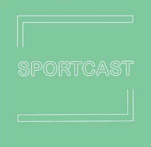

 Effecten van supplementen
Lisa en Marc gaan het in deze aflevering hebben over de groeiende populariteit van supplementen onder de sporters. Waarom hebben we het nodig? Is het eigenlijk goed voor je?
Het voorkomen en omgaan met blessures
Willem (28) was jarenlang topsporter, maar kon door een ernstige blessure aan zijn hamstring niet meer verder als topsporter. Hoe kijkt hij op deze tijd terug en wat had hij anders gedaan als hij hier meer van wist.
Het belang van hydratatie
Zorg dat je genoeg drinkt! Maar waarom? Wat is er belangrijk aan genoeg drinken en hoe beïnvloedt dit je sportprestatie. Lisa en Marc hebben het allemaal uitgezocht en vertellen je er alles over.
Waarom is slaap zo belangrijk
Samen met slaapexpert Ingrid Verbeek verdiepen we ons in het belang van slaap. We bespreken hoe je goed in slaap kunt komen en wat lichaam allemaal doet tijdens het slapen.
Een vegan dieet verbetert je sportprestaties
Karin Lambrechtse diëtiste van wielerteam Jumbo-Visma is zeker te spreken over een veganistisch dieet en adviseert het dieet zeker. Wil je weten waarom, luister dan naar de aflevering van deze week.
Sporten op een lege maag?
Is dat wel zo verstandig? In deze aflevering gaan Lisa en Marc het hebben over de gevolgen en effecten van sporten op een lege maag, maar ook de positieve kanten van vasten.